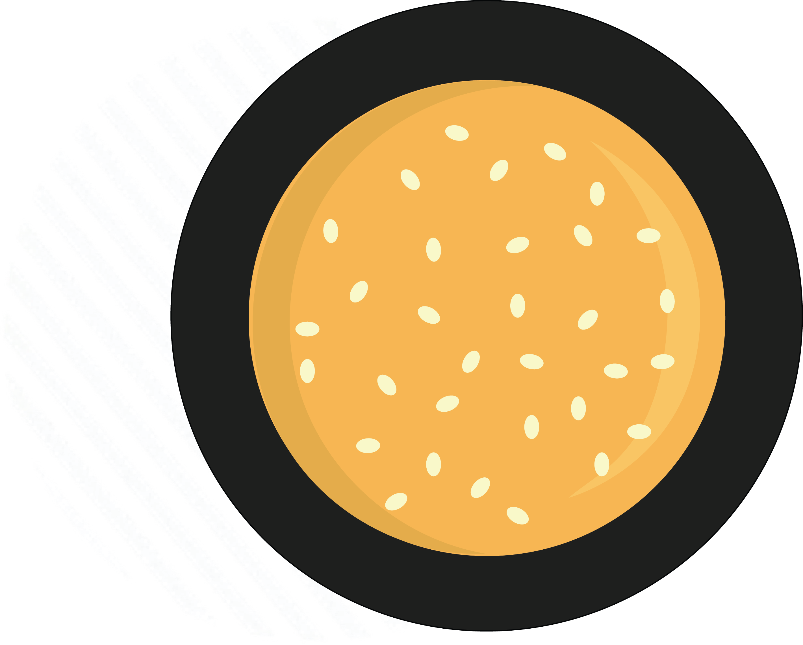

ANATOMY
OF A
BURGER

It's that time of year, folks. Endless backyard BBQs, rooftop soirees, and summer birthdays. If you're planning on doing any kind of entertaining this summer, let us remind you to keep it simple. Good friends, good wine and a killer burger. No need for the fancy stuff; a perfectly assembled, juicy burger goes a long way. It's not about artisanal bread, or the latest recipe-intensive special sauce. It’s about quality ingredients and ideal proportions. Here’s everything that goes into (and onto) a truly delicious burger.
